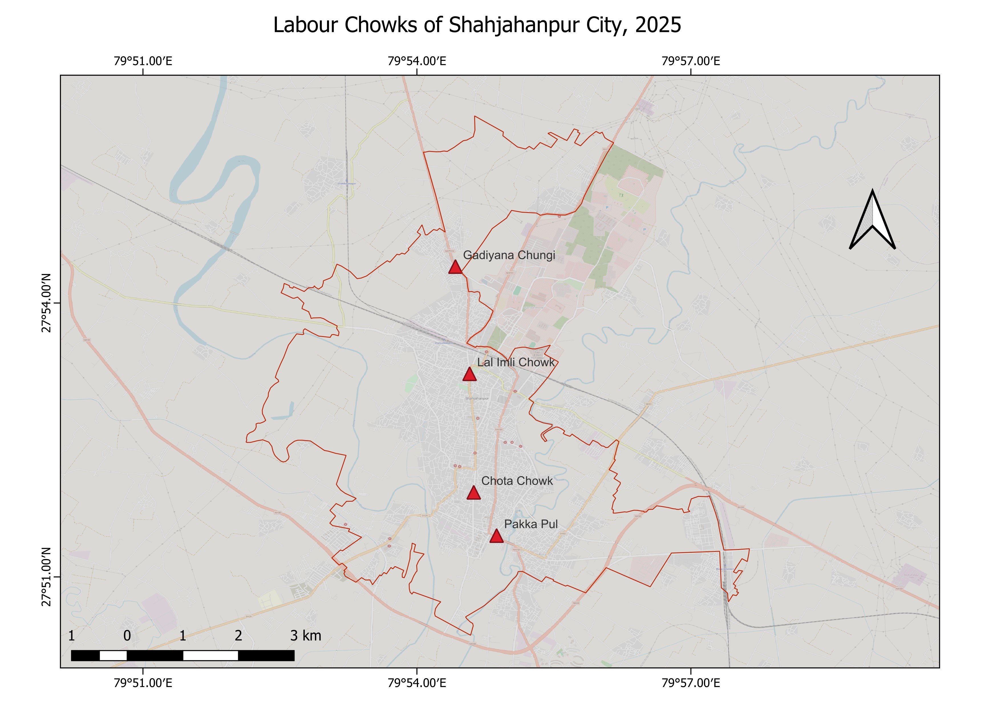
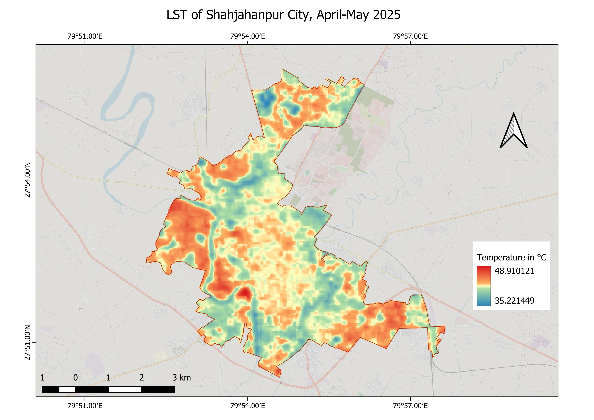
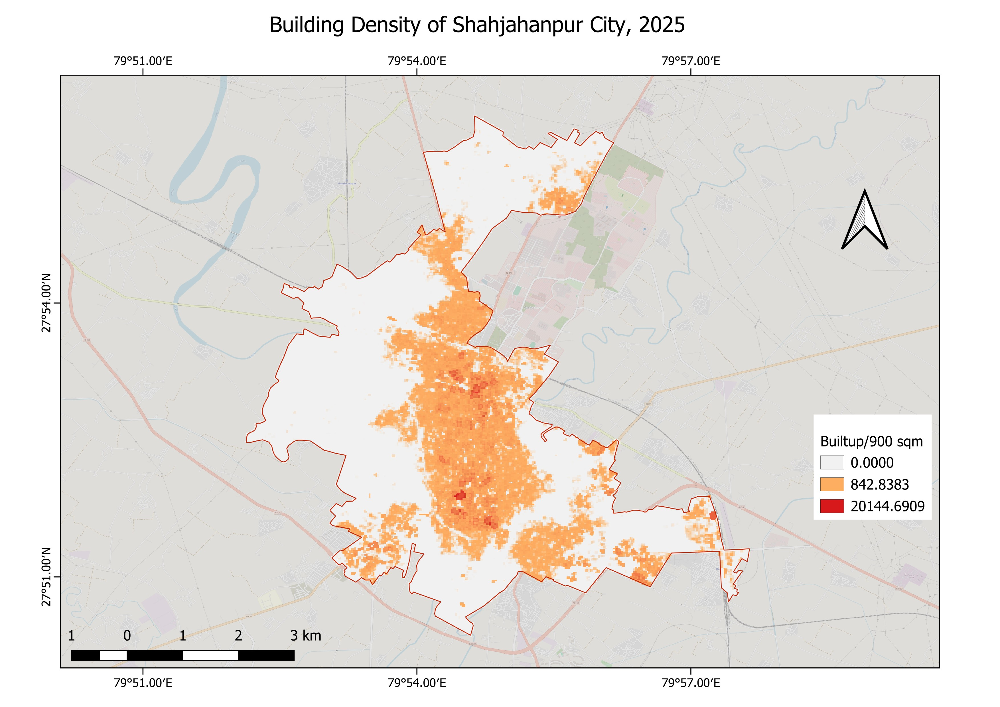
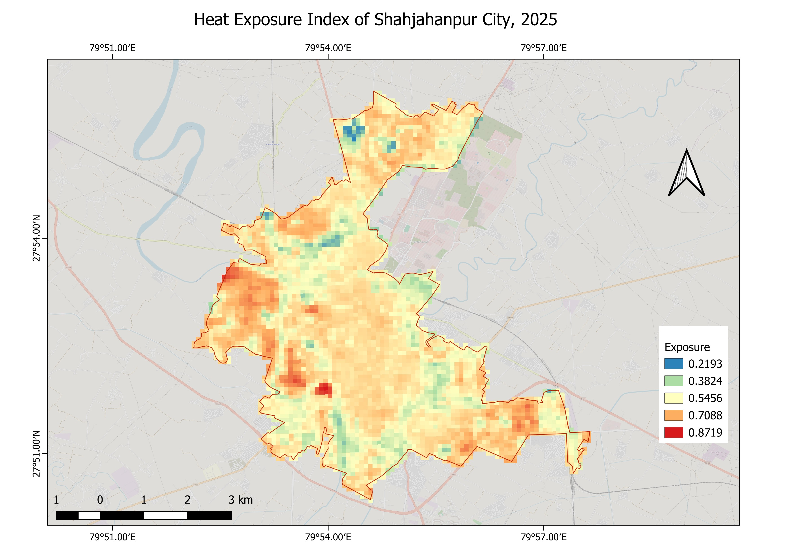
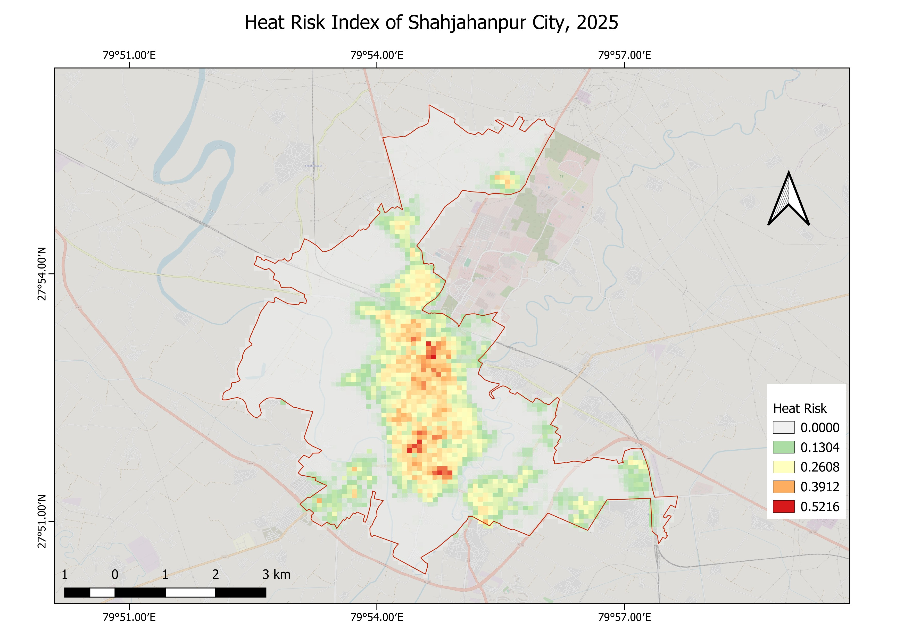
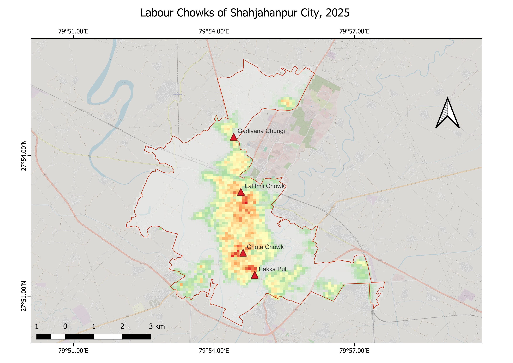

Heat Risk Index of Shahjahanpur City, 2025
A composite GIS analysis mapping thermal stress and demographic concentration across the Municipal Corporation
Policy Impact
Recognised by UPSDMA
The Shahjahanpur City Heat Action Plan 2026 has been recognised by UPSDMA as one of two benchmark CHAPs in Uttar Pradesh, with other districts directed to model their revisions on it.
I contributed the spatial analysis — a composite Heat Risk Index combining physical exposure indicators and demographic proxies to identify where thermal stress and human concentration overlap — and advised on intervention locations to ensure resources reach those who need them most
Chapter 2
Overview
This chapter develops a multi-layer GIS framework to map and quantify heat risk across Shahjahanpur City, a Tier-2 urban centre in northern Uttar Pradesh, during the peak summer season of April–May 2025. The study constructs a composite Heat Risk Index at 30-metre resolution by combining Land Surface Temperature derived from satellite imagery with built environment density and demographic proxy indicators — identifying where thermal stress and human concentration systematically overlap across the city.
The analysis is fundamentally citywide in scope. It maps the spatial distribution of heat risk across all wards of the Municipal Corporation, identifying seven distinct high-risk zones. A significant finding is the systematic spatial intersection of these zones with Labour Chowks — informal gathering points where daily wage workers congregate each morning. This co-location was not assumed but observed: it reflects deeper structural patterns linking urban morphology, informality, and thermal vulnerability.
The work was completed in approximately three months — without access to local population data, relying instead on modelled demographic proxies — and contributed directly to the Shahjahanpur City Heat Action Plan 2026.
Study Area

Shahjahanpur Municipal Corporation in north-central Uttar Pradesh forms the study boundary. Four Labour Chowks were mapped as contextual reference points — informal labour markets established along major transport corridors. These sites anchor the interpretation of the citywide risk surface rather than serving as the primary unit of analysis.
Land Surface Temperature

Mean LST was derived from Landsat 8/9 thermal infrared bands for April–May 2025. Values range from 35.2°C in vegetated and water-body fringe areas to 48.9°C in the densely built western urban core — a 13.7°C intra-city thermal range. A pronounced urban heat island is concentrated in the old city fabric, with the Garhi Nala corridor providing the most substantial cooling contrast.
Built Environment Analysis

Built-up area density was quantified at 30-metre resolution from GHSL building footprint data. Values reach 20,144 sq.m per 900 sq.m in the historic urban core — near-total impervious surface coverage. The distribution closely mirrors the LST pattern, confirming dense built fabric as the primary amplifier of surface thermal stress.
Heat Exposure Index

The Heat Exposure Index is a normalised composite (0–1) combining min-max scaled LST and building density rasters. It captures the combined thermal and built environment load at each location. Values range from 0.22 in cooler peri-urban areas to 0.87 in the densest built-up zones.
Methodology
Exposure = 0.5 × Normalised(LST) + 0.5 × Normalised(Built Density). Both inputs rescaled to 0–1 using city-wide min-max normalisation before compositing.
Heat Risk Index

The Heat Risk Index integrates physical exposure indicators with demographic proxies to identify where thermal stress and human concentration overlap. Values range from 0 in low-density peripheral areas to 0.52 in the dense south-central urban core.
Hotspot Analysis

Seven distinct high-risk zones were identified through spatial analysis of the Heat Risk Index surface. Zones 5 and 7 — in the dense south-central urban area — are the most critical, with peak composite risk scores (0.39–0.52) and the highest density of informal outdoor workers.
Visual Summary
Systematic Intersection with Labour Chowks

When Labour Chowk locations are overlaid on the Heat Risk Index surface, all four fall within medium-to-high risk zones. Chota Chowk and Pakka Pul, in the densest southern urban fabric, exhibit the highest composite risk. This co-location was observed, not assumed — it reflects the structural alignment between urban morphology and the geography of informal labour markets.
| Labour Chowk | Risk Zone | Level |
|---|---|---|
| Gadiyana Chungi | 0.13–0.26 | Low–Moderate |
| Lal Imli Chowk | 0.26–0.39 | Moderate–High |
| Chota Chowk | 0.39–0.52 | High–Very High |
| Pakka Pul | 0.39–0.52 | High–Very High |
Key Findings
The spatial distribution of heat risk in Shahjahanpur City is not random — it follows the contours of the built environment and systematically overlaps with locations where the city's most economically precarious workers concentrate daily.
- Peak LST of 48.9°C recorded in the built-up commercial core; 13.7°C intra-city thermal range
- Building density is the strongest correlate of both exposure and final heat risk score
- Seven distinct high-risk zones identified across the municipal area
- All four Labour Chowks fall within medium-to-high risk zones — a structural, not incidental, pattern
Limitations
Data constraints
The demographic layer relied on modelled proxies rather than actual population enumeration — local ward-level population data was unavailable at the time of analysis. The physical exposure surface is robust, but weighting by human concentration carries uncertainty. The full analysis was completed in approximately three months without a permanent field presence. With Census 2027 enumeration now underway, future iterations can replace modelled estimates with actual enumeration data, sharpening targeted interventions considerably.
Tools & Status
Tools: QGIS · Google Earth Engine · Landsat 8/9 · GHSL · Raster Analysis
Status: Chapter 2, Contributed to Shahjahanpur City Heat Action Plan 2026